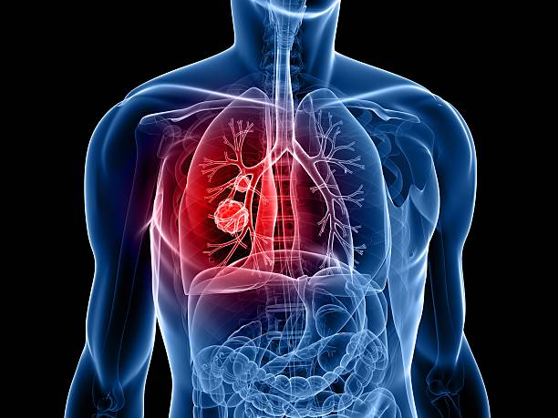
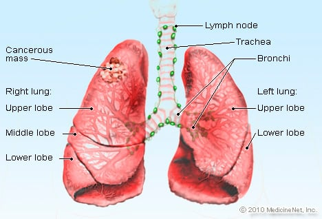
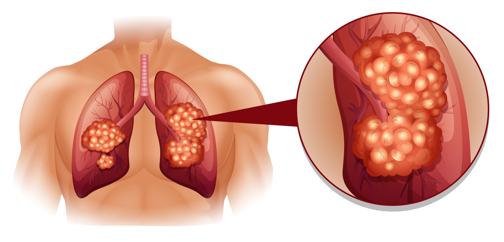

Lung Cancer
Lung cancer is a kind of cancer that develops in the tissues of the lungs, most commonly in the cells that lining the airways. In both men and women, it is the leading cause of cancer mortality.Small cell lung cancer and non-small cell lung cancer are the two most common forms. These two kinds develop and are handled in distinct ways. The most frequent kind of lung cancer is non-small cell lung cancer.

Causes
The majority of lung cancers are caused by smoking, which affects both smokers and those who are exposed to secondhand smoke. Lung cancer may also strike persons who have never smoked and have never been exposed to secondhand smoke for an extended period of time. There may be no obvious etiology of lung cancer in some situations.

In the early stages, there are generally no indications or symptoms. Lung cancer symptoms appear as the disease advances.
The following are the most common symptoms of lung cancer:
- cough that persists for more than two or three weeks
- persistent cough that is becoming worse
- consistently recurring chest infections
- blood is coughed up
- persistent breathlessness
- soreness or pain while inhaling or coughing
- consistent exhaustion or a lack of energy
- anorexia nervosa or unexplained weight loss

Although there is no surefire strategy to avoid lung cancer, we can lower your risk by doing the following some steps.
Prevention
- Don't start smoking if you've never smoked before. Talk to your children about the dangers of smoking so they may learn how to prevent this main cause of lung cancer. Start talking to your kids about the hazards of smoking while they're young so they'll know how to handle peer pressure.
- Avoid secondhand smoking if at all possible. If you live or work with someone who smokes, encourage them to quit. Request that he or she smoke outside at the very least. Avoid places where people smoke, such as pubs and restaurants, and look for places that are smoke-free.
- Quit smoking right immediately. Even if you've smoked for years, quitting lessens your chance of lung cancer.
- Radon-test your residence. Have your home's radon levels examined, especially if you reside in a region where radon is a recognized issue. It is possible to reduce radon levels in your house and make it safer.
- Avoid exposing yourself to carcinogens at work. Protect yourself from harmful substances at work by taking safeguards. Observe your employer's safety procedures. If you're provided a face mask for protection, for example, always put it on.
- Consume a healthy diet rich in fruits and vegetables. Choose a nutritious diet that includes a wide variety of fruits and vegetables. Vitamin and nutrition supplies from food are the greatest. Large amounts of vitamins in tablet form should be avoided since they might be dangerous.
- Exercise on a regular basis. Start cautiously if you haven't been exercising consistently. Make an effort to exercise on most days of the week.
{% endblock %}